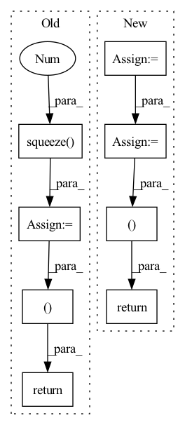

Pattern ID :1708
Before Change
// (batch, 1, dim)
// c_i = \sum_{j=1}^{T_x} \alpha_{ij} h_j
context_vec = torch.bmm(alignment.unsqueeze(1), inputs)
context_vec = context_vec.squeeze(1 )
// Concat input query and previous context_vec context
cell_input = torch.cat((query, context_vec), -1)
//cell_input = cell_input.unsqueeze(1)
// Feed it to RNN
// s_i = f(y_{i-1}, c_{i}, s_{i-1})
cell_output = self.rnn_cell(cell_input, cell_state)
context_vec = context_vec.squeeze(1)
return cell_output, context_vec, alignment
After Change
// (batch, 1, dim)
// c_i = \sum_{j=1}^{T_x} \alpha_{ij} h_j
context = torch.bmm(alignment.unsqueeze(1), annotations)
context = context.squeeze(1)
// Concat input query and previous context context
rnn_input = torch.cat((memory, context), -1)
//rnn_input = rnn_input.unsqueeze(1)
// Feed it to RNN
// s_i = f(y_{i-1}, c_{i}, s_{i-1})
rnn_output = self.rnn_cell(rnn_input, rnn_state)
context = context.squeeze(1)
return rnn_output, context, alignment
In pattern: SUPERPATTERN
Frequency: 4
Non-data size: 8
Instances Fragment ID: 5805018
Project Name: coqui-ai/tts
Commit Name: b4032e8dffc2addf976468826129edea2b459ead
Time: 2018-03-07
Author: egolge@mozilla.com
File Name: layers/attention.py
M Class Name: AttentionWrapper
N Class Name: AttentionRNN
M Method Name: forward(7)
N Method Name: forward(8)
M Parent Class: nn.Module
N Parent Class: nn.Module
M File Name: layers/attention.py
N File Name: layers/attention.py
M Start Line: 55
M End Line: 92
N Start Line: 56
N End Line: 89
Before Change
attention = torch.bmm(alignment.unsqueeze(1), memory)
// (batch, dim)
attention = attention.squeeze(1 )
return cell_output, attention, alignment
After Change
// Alignment
// (batch, max_time)
alignment = self.alignment_model(cell_output, processed_inputs)
if mask is not None:
mask = mask.view(query.size(0), -1)
alignment.data.masked_fill_(mask, self.score_mask_value)
// Normalize context_vec weight
alignment = F.softmax(alignment, dim=-1)
// Attention context vector
// (batch, 1, dim)
context_vec = torch.bmm(alignment.unsqueeze(1), memory)
// (batch, dim)
context_vec = context_vec.squeeze(1)
return cell_output, context_vec, alignment
Fragment ID: 5805024
Project Name: coqui-ai/tts
Commit Name: 2fd37a5bad9374002873db26927694dd0d329e90
Time: 2018-02-05
Author: egolge@mozilla.com
File Name: layers/attention.py
M Class Name: AttentionWrapper
N Class Name: AttentionWrapper
M Method Name: forward(8)
N Method Name: forward(8)
M Parent Class: nn.Module
N Parent Class: nn.Module
M File Name: layers/attention.py
N File Name: layers/attention.py
M Start Line: 57
M End Line: 86
N Start Line: 58
N End Line: 89
Before Change
m, x_rnn, _ = self.erb_stage(feat_erb)
spec = self.mask(spec, m, atten_lim) // [B, 1, T, F, 2]
lsnr, _ = self.lsnr_net(x_rnn)
out_specs = [spec.squeeze(1 ) .clone() for _ in range(len(self.refinement_stages) + 1)]
// re/im into channel axis
spec_f = (
spec.squeeze(1)[:, :, : self.df_bins].permute(0, 3, 1, 2).clone()
) // [B, 2, T, F_df]
h_conv: Optional[Tensor] = None
for i, (stage, _) in enumerate(zip(self.refinement_stages, self.refinement_snr_max)):
refinement, h_conv, _ = stage(self.cplx_comp(spec_f), h_conv)
spec_f = spec_f + refinement
out_specs[i + 1][..., : self.df_bins, :] = spec_f.permute(0, 2, 3, 1)
spec[..., : self.df_bins, :] = spec_f.unsqueeze(-1).transpose(1, -1)
return spec, m, lsnr, out_specs
def init_model(df_state: Optional[DF] = None, run_df: bool = True, train_mask: bool = True):
assert run_df and train_maskAfter Change
r, _, _ = self.refinement_stage(self.cplx_comp(spec_f))
spec_f = self.refinement_op(spec_f, r)
spec[..., : self.df_bins, :] = spec_f.unsqueeze(-1).transpose(1, -1)
return spec, m, lsnr, None
def init_model(df_state: Optional[DF] = None, run_df: bool = True, train_mask: bool = True):
assert run_df and train_mask Fragment ID: 5805009
Project Name: rikorose/deepfilternet
Commit Name: 946b362aa406f8a1808a252393351d0e7523130a
Time: 2022-04-12
Author: h.schroeter@pm.me
File Name: DeepFilterNet/df/multistagenet.py
M Class Name: MSNet
N Class Name: MSNet
M Method Name: forward(3)
N Method Name: forward(3)
M Parent Class: nn.Module
N Parent Class: nn.Module
M File Name: DeepFilterNet/df/multistagenet.py
N File Name: DeepFilterNet/df/multistagenet.py
M Start Line: 534
M End Line: 547
N Start Line: 504
N End Line: 510
Before Change
// Newly trained models should pad the full spectrum, which enables to already include the
// delay in the masking stage.
if not self.pad_specf:
spec = self.pad_spec(spec)
m = self.pad_out(m.unsqueeze(-1)).squeeze(-1 )
spec = self.mask(spec, m)
if self.run_df:
df_coefs, _ = self.df_dec(emb, c0)
df_coefs = self.pad_out(df_coefs)
if self.pad_specf:
// Only pad the lower part of the spectrum.
spec_f = self.pad_spec(spec)
spec_f = self.df_op(spec_f, df_coefs)
spec[..., : self.nb_df, :] = spec_f[..., : self.nb_df, :]
else:
spec = self.df_op(spec, df_coefs)
return spec, m, lsnr, df_coefs
After Change
else:
spec = self.df_op(spec, df_coefs)
return spec, m, lsnr, df_alpha
Fragment ID: 5804999
Project Name: rikorose/deepfilternet
Commit Name: 3e554333e5a3f0802f8df5a00e07de517dfe6561
Time: 2022-10-18
Author: h.schroeter@pm.me
File Name: DeepFilterNet/df/deepfilternet2.py
M Class Name: DfNet
N Class Name: DfNet
M Method Name: forward(4)
N Method Name: forward(4)
M Parent Class: nn.Module
N Parent Class: nn.Module
M File Name: DeepFilterNet/df/deepfilternet2.py
N File Name: DeepFilterNet/df/deepfilternet2.py
M Start Line: 428
M End Line: 455
N Start Line: 486
N End Line: 502